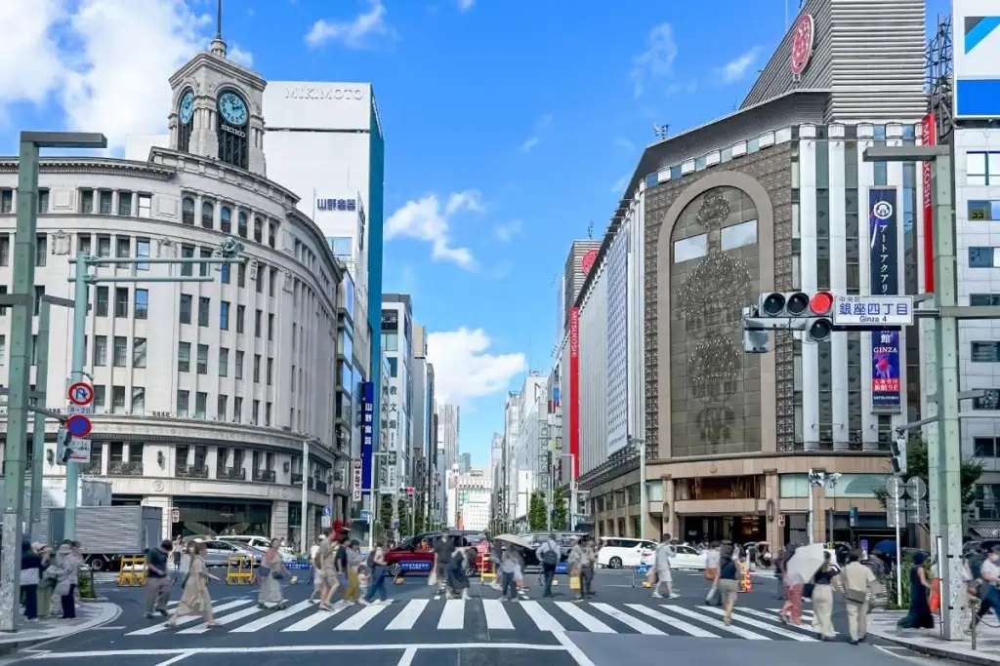
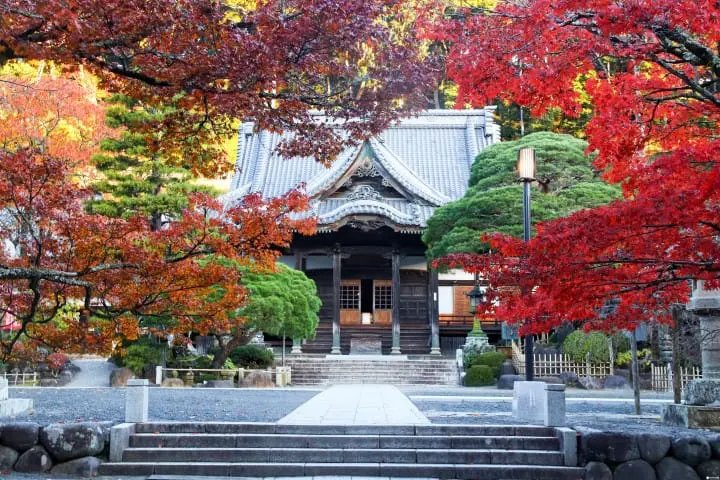

Before We Go
行前導讀know before you go
這趟會經過三個很不一樣的地方：熱鬧的東京老街區、火山撞出來的溫泉半島，和富士山腳下的五座湖。出發前花十分鐘讀一讀，到了現場會更有感覺。

FIG. 01銀座四丁目，左邊的鐘塔是和光
銀座・築地Ginza & Tsukiji
銀座的「銀」是真的銀子。1612 年德川家康把鑄造銀幣的「銀座」（官方造幣所）搬到這裡，地名就這樣留了下來。明治初年一場大火把這一帶燒光，政府乾脆照西洋城市重蓋，鋪上紅磚、點起瓦斯路燈，銀座成了日本第一條「洋風大街」，從此一直是東京最時髦的地方。
隔壁的築地，字面意思是「填出來的地」。江戶時代為了重建被大火燒掉的本願寺，把海邊填成陸地。1935 年東京的中央批發市場搬來這裡，築地從此跟「魚」畫上等號；2018 年批發市場搬到豐洲，但外圍的「場外市場」留了下來，現在還有約 460 家店。
你知道嗎？
- 「銀ブラ」可能跟咖啡有關。老東京人把在銀座閒晃叫「銀ブラ」，有一說是「去銀座喝巴西咖啡」的意思，源頭是 1911 年開業的咖啡館「Café Paulista」。芥川龍之介是常客，約翰・藍儂和小野洋子也來喝過，店到現在還開著。
- 和光的鐘塔當過美軍的福利社。1932 年落成的和光大樓躲過了東京大空襲，戰後卻被駐日美軍徵收，改成專賣給美國大兵的 PX 商店，直到 1952 年才還給日本。Day 1 封面夜景裡亮著的，就是這座塔。
- 你吃的海鮮丼，背後有四百年。德川家康把大阪佃村的漁夫帶到江戶，替幕府捕魚，吃不完的魚拿到日本橋賣，這就是東京魚市的起點。1923 年關東大地震燒毀日本橋魚市，才搬到築地；2018 年再搬到豐洲。

FIG. 02修禪寺，修善寺溫泉的名字由來
伊豆Shuzenji & Izu-Nagaoka
伊豆半島原本不是日本的一部分。它是太平洋上的一座火山島，跟著海底板塊一路往北漂，大約六十萬年前和本州連成一塊，才變成現在的半島。地底下的火山熱力，就是伊豆到處都有溫泉的原因。
修善寺是伊豆最老的溫泉鄉，相傳由空海在 807 年開創。這裡也是一段鎌倉幕府的傷心史：第二代將軍源賴家被母親北條政子一族軟禁在修善寺，1204 年在這裡遇害，溫泉街旁的「指月殿」就是政子為他蓋的。三養莊所在的伊豆長岡則安靜得多，周圍是田和小山，旁邊有一座世界遺產「韮山反射爐」，是江戶末年為了鑄大砲蓋的熔鐵爐。
你知道嗎？
- 夏目漱石在修善寺「死了三十分鐘」。1910 年他到修善寺的旅館養胃病，一天晚上大吐血、昏迷過去。後來他在散文裡寫，自己有三十分鐘是「死掉」的，這段被稱為「修善寺大患」，之後他的作品風格也變了。
- 鎌倉幕府是從伊豆的一段戀愛開始的。源賴朝少年時被流放到伊豆，一住二十年，愛上了地方豪族的女兒北條政子，兩人不顧家裡反對私奔成婚。後來賴朝起兵打下天下，政子就是三養莊所在的伊豆之國市人。
- 家康愛吃山葵，還把它列為禁品。靜岡是日本最早種山葵的地方，當地人把山葵獻給退休住在駿府（今天的靜岡市）的德川家康。家康一吃就愛上，又因為山葵葉長得像德川家的「葵紋」，下令不准外流。在修善寺可以買到整根新鮮山葵，現磨的比條裝的清甜。

FIG. 03河口湖北岸的大石公園
富士五湖Fuji Five Lakes
富士山高 3,776 公尺，是日本最高的山，2013 年以「信仰的對象與藝術的泉源」登錄世界文化遺產。山北麓的山中湖、河口湖、西湖、精進湖、本栖湖合稱富士五湖，都是火山噴發的熔岩擋住河流後積出來的湖。
西湖和精進湖原本是同一座大湖，西元 864 年富士山大噴發，熔岩流進湖裡把它切成兩半；那片熔岩上後來長出的森林，就是「青木原樹海」。我們會住兩晚的河口湖，是五湖裡最熱鬧的一座，北岸看得到湖面倒映的富士山；山中湖則是面積最大、位置最高的一座。
你知道嗎？
- 千圓鈔上的富士山，是一個人拍了一輩子的成果。攝影師岡田紅陽拍富士山拍了四十多年，留下好幾十萬張照片。舊版千圓鈔背面那張本栖湖倒影，就是照他 1935 年拍的〈湖畔之春〉畫的。
- 餺飥的名字，相傳來自武田信玄的刀。山梨的戰國名將武田信玄帶兵打仗時，用寬麵條和蔬菜燉成一鍋當軍糧。民間流傳他用自己的「寶刀」（日文唸 hōtō）切麵，餺飥就叫ほうとう。這只是諧音傳說，但山梨人很愛講。
- 「富士山配月見草最好看」。1938 年作家太宰治住在河口湖旁御坂峠的「天下茶屋」寫作，在《富嶽百景》裡留下這句名言。茶屋現在還在，二樓保留了他住過的房間，從那裡看下去就是河口湖和富士山。
從海邊的市場，到火山島的溫泉，最後停在富士山腳下。
秋日賞楓行
秋日賞楓行 行前導讀